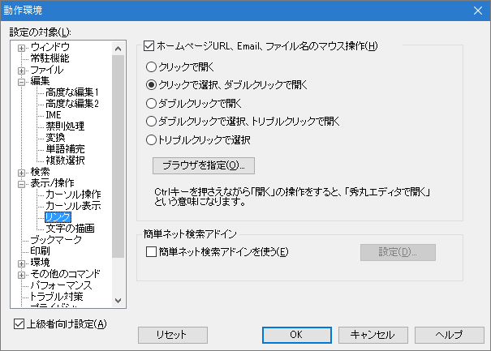
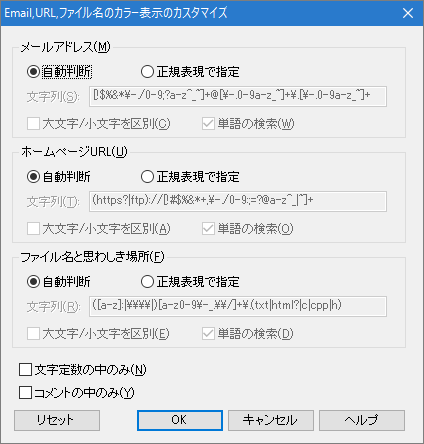

[HME0081A]
●秀丸でハイパーリンク

- 秀丸エディタには Internet Explorer といったウェブブラウザのようなハイパーリンク機能が有りますか？有れば、使えるようにするための設定方法を教えてください。

-
マウス操作で行う場合
各々ハイパーリンクを行いたい機能について、「その他」→「ファイルタイプ別の設定」→「デザイン」→「表示」の「メールアドレス」「ホームページURL」「ファイル名と思わしき場所」をON にしてください。
この設定をすませれば、「その他」→「動作環境」→「表示/操作」→「リンク」の、「ホームページURL、Emailのマウス操作」の設定に従って、マウスによるハイパーリンクが行えます。
(「リンク」が表示されていない場合は、「動作環境」画面左下にある「上級者向け設定」をONにしてください)
ただし URL file:///...形式はウェブブラウザで開くとは限らず、ファイル名の場合と同様関連付けられたアプリケーションで開きます。
キーボードから行う場合
キーボードから行う場合は、上記設定に加えて、「...を開く」を [HME0054A]●他のエディタと同じキー操作を再現したいを参考に適当なキーに割り当ててください。
この設定をすませれば、URLの上にカーソルを移動して、割り当てたキーを押すとハイパーリンクが行えます。また関連付けられたアプリケーションやファイルが見つからないなどの理由で失敗した場合のメッセージが異なりますが、「ダイレクトタグジャンプ」も同様のことが行えます。
なお「...を開く」は「その他」→「コマンド一覧」と「ファイル系」でたどれ、「ダイレクトタグジャンプ」は「その他」→「コマンド一覧」と「その他」でたどれます。また、「ダイレクトタグジャンプ」は標準で、[Ctrl]+[F10]に割り当てられています。カラー表示されない場合の操作
何らかの理由でカラー表示をしたくない場合や、URLにスペースや日本語などが含まれるといった理由でカラー表示されない場合は、上記の方法が使えません。
この様な場合、ハイパーリンクを実現したい部分を範囲選択し、「...を開く」「ダイレクトタグジャンプ」を利用してください。マウス操作の場合、この方法はデフォルトの設定では使えませんので、「第II部〜知っていると便利な秀丸の機能秀丸のカスタマイズ」 の【６】キー操作を参考に、「選択中右ボタン」に機能を追加すると便利だと思います。
- [補足]
-
「メールアドレス」「ホームページURL」「ファイル名と思わしき場所」認識する文字列は、正規表現によるカスタマイズが可能です。各設定を選択すると「カスタマイズ」ボタンがあり、そのボタンを押すとカスタマイズ用のダイアログが表示されます。「自動判断」ではなく、「正規表現で指定」を選択し、マッチさせる正規表現を指定します。

ちなみに、正規表現で「自動判断」と同じ判定を行う事は出来ないとの事。